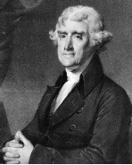

“Kaba kuvvet, doğruyu değiştiremez.” - Thomas Jefferson
Thomas Jefferson (1743-1826), Amerika Birleşik Devletleri’nin üçüncü başkanı ve Devrim Amerikası’nın en etkili adamlarından biriydi. 1776’daki Bağımsızlık Bildirgesi’ni de içine alan yazılarında Jefferson, genç cumhuriyetin ideallerini ender görülür bir belâgatle kaleme aldı. Daha sonraları başkan olarak Jefferson, kendi şüphelerini bir kenara koydu ve Amerika Birleşik Devletleri’nin topraklarını iki katına çıkaran bir hareketi, dönüm başına üç sent ödeyerek Fransa’dan Louisiana topraklarını satın almayı onayladı.

Jefferson, Virginia, Shadwell’de 1743’te doğdu. Devrim’den önce hukukçuluk yaptı. Jefferson’un ilgisi sadece siyasetle sınırlı değildi. Aynı zamanda bir mimar ve kâşifti. John Locke tarafından yazılan felsefî eserleri okuduğu William ve Mary Koleji’ndeki eğitimi, siyasi görüşlerini güçlü bir biçimde etkiledi.
1776’da Jefferson, ayak direyen on üç sömürgenin vatandaşlarını yönetmek üzere bir araya getirilen Philadelphia’daki Kıta Kongresi’ne katıldı. Yüksek vergiler ve baskılar, delegeleri İngiliz Kraliyeti’nden bağımsız olmayı desteklemeye ikna etti. Kongrenin liderleri, otuz üç yaşındaki Jefferson’dan Londra’ya gönderilmek üzere resmî bir bildiri yazmada John Adams ve Benjamin Franklin’e yardım etmesini istediler. Sonuç, Locke’un ve diğer felsefî etkilerin izlerini taşıyan, İngiliz yönetimine şiddetli bir başkaldırı niteliğindeki Bağımsızlık Bildirgesi idi.
Ne tip bir hükümet İngiliz yönetiminin yerini alabilirdi? Güneyli bir çiftçi ve köle sahibi olan Jefferson, zayıf bir merkezî hükümetin ve devletle kilise arasında kesin bir ayrılığın olduğu, küçük çiftçilerden kurulu bir cumhuriyeti tasavvur etti. Jefferson’un vizyonu, güçlü bir federal hükümete karşı olan özellikle güneydeki siyasetçi nesiller üzerinde kuvvetli bir etki bıraktı. Jefferson’un güçlü bir federal hükümete karşı yaptığı muhalefete rağmen, başkan olarak birçok anayasa uzmanının yürütme gücünü aştığına inandıkları bir kararla Louisiana’nın Fransa’dan satın alınmasını onayladı.
Jefferson başkanlığın ardından, Bağımsızlık Bildirgesi’nin İngiliz yönetimine karşı savaş borusu gibi çaldığı günden elli yıl sonra, 4 Temmuz 1826’da öldüğü yer olan Monticello’daki tepebaşı malikânesine çekildi.
EK BİLGİLER:
1. Theodore Roosevelt, George Washington ve Abraham Lincoln ile birlikte Jefferson’un büstü de Güney Dakota’da Rushmore Dağı’nın üzerine oyulmuştur.
2. Jefferson ve Adams, başkanlık için birbirine karşı iki kez yarışmış siyasi muhaliflerdi ama siyaseti bıraktıktan sonra arkadaş oldular. Adams, Jefferson’la aynı günde öldü.
3. Köleliğin ahlâken şeytanca olduğunu diğer Kurucu Babalar gibi Jefferson da savunmasına rağmen, kendisi de bir köle sahibiydi. Bir tarihçi tarafından yapılan son DNA çalışmasına göre Jefferson’ın, kölelerinden biri olan Sally Hemings’den bir dizi çocuğu olmuştu.